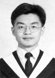

 碩士班研究生：張育榮
Personal Information:
Birthday:10/03/1971
Height: 171cm
E-Mail:
yjchang@neuron.et.ntust.edu.tw
Education:
B.S.
, 1991-1995, National Chiao-Tung University,
department of Computer Science & Information Engineering.
M.S.
, 1997- , National Taiwan University of Science and Technology,
department of Electronic Enigineering.
Now, I am a second-year postgraduate majoring in computer science.
Research Experience:
大學專題
: 可重用軟體元件資料庫,
學習重點: Team work, OO &
Reusing concepts, C++ & Windows SDK programming.
指導教授: 陳登吉教授, 1994-1995,
研究所方向
: 智慧型網頁系統、類神經網路、模糊理論與人工智慧,
指導教授:
李漢銘教授
, 1997-
Work Experience:
Military Service: Army of R.O.C., 1995-1997, served as a telegram receiver & transmitter and ranked in corporal, majoring in Morse code R/T and AM antenna.
Publications:
張育榮、曾彥賀著, Delphi深入核心, 台北: 松崗電腦圖書, 1995年11月。
Interests & related experience:
Listening to, performing(especially singing), and composing songs are all my faivorates.
The
following is my related experence:
Saxophone Player of the Chien-Kuo High School Marching Band,
1987-1989.
Saxophone Player of the Dizzy Jazz Band, 1991-1993.
Leader of the MIDI club of NCTU, 1992.
Version: 1.1
Last Update:07/04/1998
Thanks for your attention!
If Any Comment, Welcome to E-Mail: yjchang@neuron.et.ntust.edu.tw